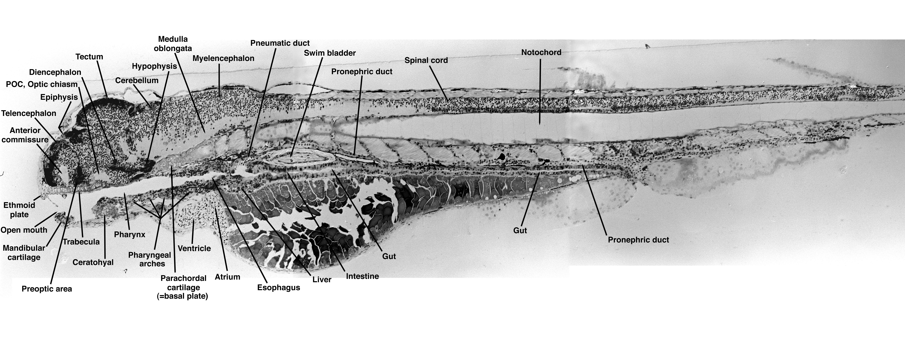
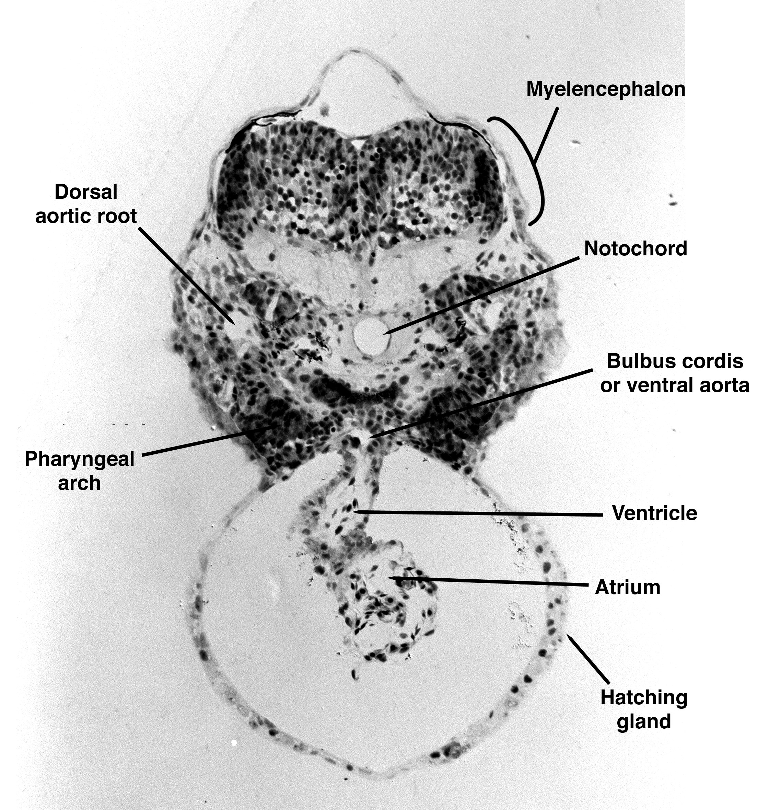
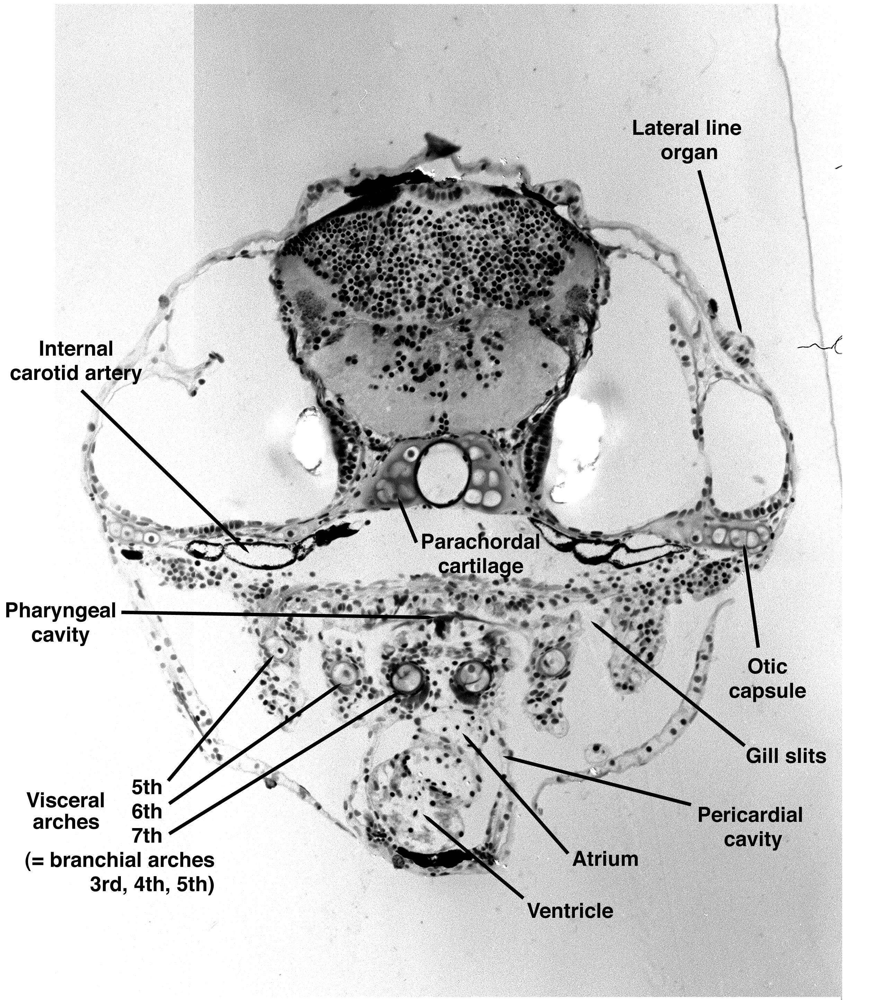
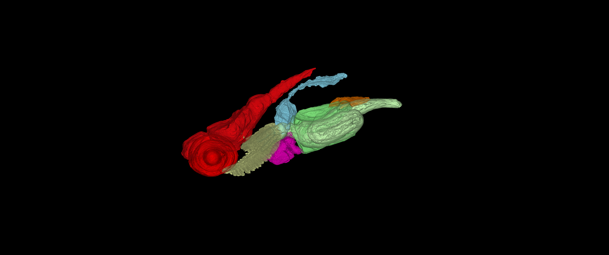
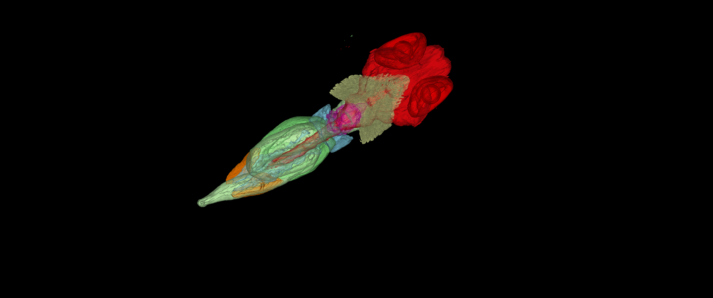

About Zebrafish
Zebrafish are commonly used in scientific research because they are small, develop quickly and their larvae are transparent. This makes it possible to observe internal structures such as the heart during early development. They are, therefore, very useful for toxicity assays (tests that evaluate the possible negative affects of a substance on the biological functions of an organism) as heart rate is a major indicator of overall health.
Currently, in order to accurately measure the heart rate of zebrafish they must be sedated to keep them still enough for imaging and analysis. This, however, means that their heart rate is effected both by the drug being tested and the sedative, reducing the accuracy of the toxicity assay.
Side view showing the anatomy of a zebrafish larva.
Our Project
The aim of this project is to develop image analysis from videos of freely swimming, untranquillised zebrafish larvae.
The project will involve image processing and segmentation to identify the zebrafish and heart region. Changes in the heart region over time can then be analysed to estimate the heart rate.
Avoiding tranquillisation is useful because it allows measurements to be taken while the zebrafish are swimming normally, reducing the effect that sedation could have on the measured heartbeat.
Zebrafish Heart Anatomy
The images below show cross sections of zebrafish at different stages of development. The atrium and ventricle can be seen in both images.
48 hour zebrafish

Cross-section of a zebrafish showing the atrium and ventricle at 48 hours.
5 day zebrafish

Cross-section of a zebrafish showing the heart at 5 days.
3D Zebrafish Model
These images show plan and side views of a 3D zebrafish model. They help show the position of different structures within the fish.
Side view

Side view of the 3D zebrafish model.
Plan view

Plan view of the 3D zebrafish model.